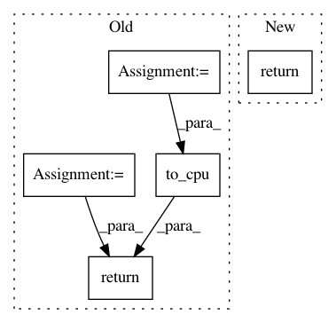

6a4355999fd3af41fbb2215a9f207195caafc546,chainercv/links/model/ssd/multibox_loss.py,,_hard_negative,#Any#Any#Any#,18
Before Change
def _hard_negative(x, positive, k):
xp = chainer.cuda.get_array_module(x, positive)
x = chainer.cuda.to_cpu(x)
positive = chainer.cuda.to_cpu(positive)
rank = (x * (positive - 1)).argsort(axis=1).argsort(axis=1)
hard_negative = rank < (positive.sum(axis=1) * k)[:, np.newaxis]
return xp.array(hard_negative)
def multibox_loss(mb_locs, mb_confs, gt_mb_locs, gt_mb_labels, k):
Computes multibox losses.
After Change
def _hard_negative(x, positive, k):
rank = (x * (positive - 1)).argsort(axis=1).argsort(axis=1)
hard_negative = rank < (positive.sum(axis=1) * k)[:, np.newaxis]
return hard_negative
def multibox_loss(mb_locs, mb_confs, gt_mb_locs, gt_mb_labels, k):
Computes multibox losses.
In pattern: SUPERPATTERN
Frequency: 3
Non-data size: 5
Instances
Project Name: chainer/chainercv
Commit Name: 6a4355999fd3af41fbb2215a9f207195caafc546
Time: 2017-10-06
Author: Hakuyume@users.noreply.github.com
File Name: chainercv/links/model/ssd/multibox_loss.py
Class Name:
Method Name: _hard_negative
Project Name: chainer/chainerrl
Commit Name: c23fa1d1def2202c2508247eef2b8b83aedbe54b
Time: 2016-08-25
Author: muupan@gmail.com
File Name: agents/dqn.py
Class Name: DQN
Method Name: _batch_states
Project Name: eriklindernoren/PyTorch-YOLOv3
Commit Name: 9b0a0dd6fe7b4ac021d91acc6b4f96b403dd6b67
Time: 2019-04-26
Author: eriklindernoren@live.se
File Name: models.py
Class Name: Darknet
Method Name: forward